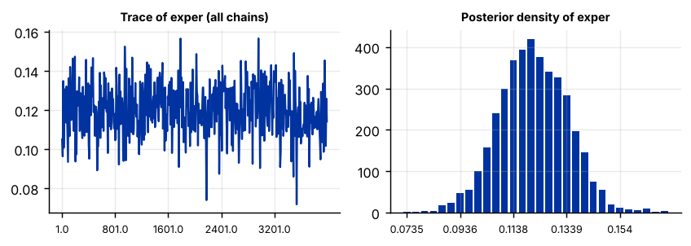

Run this model on your own data in Open Econometric Systems →
Step 1The question and the model
What makes a married woman more likely to be in the labour force, and by how much? The data are 753 married women in 1975; 568 in every thousand were working. The outcome \(y_i\) is 1 if the woman works, and the model for the probability is
The Bayesian version adds a prior on \(\beta\) and reports its posterior distribution. The engine uses an independent normal prior on each slope, \(\beta_j \sim N(0, s^2)\) per one-standard-deviation change in \(x_j\) (Gelman et al. 2008), so a single number \(s\) is meaningful whatever the units of the variables; the default \(s = 2.5\) is weakly informative: a one-s.d. change in a regressor is unlikely to move the log odds by more than about 5. The constant has an \(N(0, 10^2)\) prior.
| Link | Sampler | Properties |
|---|---|---|
| Probit | Albert-Chib (1993) Gibbs sampler: draw a latent normal variable for each observation, then the coefficients | Exact conditional distributions: no tuning, no rejection |
| Logit | Independence Metropolis-Hastings with a Student-\(t\) proposal centred at the posterior mode | Acceptance rate is reported; draws are correlated |
Both link functions give almost the same probabilities; the logit coefficients are about 1.6 to 1.9 times the probit ones, and the logit has odds ratios. The engine runs several chains from different starting points and reports the R-hat statistic.
Why Bayesian?
Three reasons. (1) The marginal effect on the probability is a nonlinear function of the coefficients and the data; with draws you get its full posterior, with an interval that means what people think it means, and no delta method. (2) A prior can include earlier evidence. (3) With a rare outcome, a small sample or separation (a regressor that predicts the outcome perfectly), maximum likelihood either fails or produces estimates that are infinite; a prior keeps the problem well posed (Step 8).
How to write it: the model
We estimate the probability of labour force participation by Bayesian logit (Polson et al. 2013 and Gelman et al. 2008 for the prior). Each slope has an independent normal prior with standard deviation 2.5 per one-standard-deviation change in its regressor, and the constant a normal prior with standard deviation 10. The posterior is sampled by independence Metropolis-Hastings with a Student-\(t\) proposal at the posterior mode, in two chains of 2,000 draws after 1,000 burn-in draws. We report posterior means, 95% credible intervals, odds ratios and average marginal effects computed draw by draw.
Step 2Load the data
import numpy as np
import pandas as pd
import oes_engine as oes # pip install -e open-econometric-systems/oes-engine
data = open("mroz.csv").read()
df = pd.read_csv("mroz.csv")
x = ["nwifeinc", "educ", "exper", "age", "kidslt6", "kidsge6"]
print(df.groupby("inlf")[x].mean().round(2).T.rename(columns={0: "not working", 1: "working"}))
print("share working:", df["inlf"].mean().round(3), " n =", len(df))inlf not working working nwifeinc 21.70 18.94 educ 11.80 12.66 exper 7.46 13.04 age 43.28 41.97 kidslt6 0.37 0.14 kidsge6 1.36 1.35 share working: 0.568 n = 753
How to read it
Of 753 women, 57% were in the labour force. Working women are better educated (12.7 years against 11.8), have much more experience (13.0 years against 7.5), are slightly younger (42.0 against 43.3) and have far fewer small children (0.14 against 0.37 children under six on average), and live in households with a somewhat lower income from other sources ($18,900 against $21,700). nwifeinc is the husband's and other household income in thousands of dollars, so it is the income a woman has if she does not work. kidslt6 counts children under six and kidsge6 children aged six to eighteen.
Step 3Estimate
spec = dict(y="inlf", x=x, link="logit")
r = oes.run("bayes_binary", data, spec)
oes.summary(r)
oes.show(r, "Posterior of the coefficients")
oes.show(r, "Maximum likelihood")Observations: 753
Link: logit
Share of ones: 0.568
Chains x draws: 2 x 2000
Largest R-hat: 1.002
Smallest effective sample size: 1810.0
Area under the ROC curve: 0.797
Posterior of the coefficients (logit, normal prior with s.d. 2.5 per one-s.d. change in x)
Mean Std. dev. 2.5% Median 97.5% P(> 0)
Parameter
const 0.8515 0.8541 -0.8043 0.8373 2.5126 0.841
nwifeinc -0.0205 0.0081 -0.0361 -0.0205 -0.0045 0.006
educ 0.2295 0.0435 0.1460 0.2284 0.3157 1.000
exper 0.1213 0.0132 0.0952 0.1212 0.1463 1.000
age -0.0922 0.0146 -0.1209 -0.0920 -0.0639 0.000
kidslt6 -1.4557 0.2011 -1.8699 -1.4534 -1.0530 0.000
kidsge6 0.0577 0.0748 -0.0910 0.0591 0.2036 0.775
Note: 2 chains of 2000 draws after 1000 burn-in.
Maximum likelihood for comparison
Coef. Std. err. Posterior mean Posterior s.d.
Parameter
const 0.8379 0.8409 0.8515 0.8541
nwifeinc -0.0202 0.0083 -0.0205 0.0081
educ 0.2270 0.0433 0.2295 0.0435
exper 0.1197 0.0136 0.1213 0.0132
age -0.0911 0.0143 -0.0922 0.0146
kidslt6 -1.4394 0.2015 -1.4557 0.2011
kidsge6 0.0582 0.0734 0.0577 0.0748How to read it
Each row is a posterior distribution for a coefficient in the log odds. An extra year of education raises the log odds of working by 0.229 (posterior standard deviation 0.044; 95% credible interval 0.146 to 0.316), and a year of experience by 0.121. Age lowers it by 0.092 a year, and each child under six by 1.46, a large effect. Household income from others lowers it by 0.020 per thousand dollars, with a posterior probability of 0.994 that the effect is negative. Children aged six or older have a coefficient of 0.058, with a posterior probability of being positive of only 0.775: the data cannot tell the sign.
The second table sets the maximum likelihood estimates against the posterior means and standard deviations. They agree to within 0.12 standard errors for every coefficient (education 0.227 against 0.229; children under six \(-1.439\) against \(-1.456\)). With 753 observations and a weak prior this is the expected result: the Bayesian logit reports the same answer with a better interpretation.
Step 4Odds ratios and marginal effects
The coefficient is not the effect on the probability. The odds ratio \(e^{\beta}\) is the factor by which a one-unit change multiplies the odds of working. The average marginal effect is the change in the probability, averaged over the women in the sample; for a dummy variable it is the change from 0 to 1. Both are computed for each posterior draw, so they come with credible intervals.
oes.show(r, "Posterior of the odds ratios")
oes.show(r, "Posterior of the average marginal effects")Posterior of the odds ratios (per unit change)
Mean 2.5% Median 97.5% P(> 1)
Variable
nwifeinc 0.9798 0.9645 0.9797 0.9955 0.006
educ 1.2592 1.1572 1.2565 1.3713 1.000
exper 1.1290 1.0999 1.1288 1.1576 1.000
age 0.9120 0.8861 0.9121 0.9381 0.000
kidslt6 0.2380 0.1541 0.2338 0.3489 0.000
kidsge6 1.0624 0.9130 1.0609 1.2258 0.775
Posterior of the average marginal effects (change in the probability)
Mean Std. dev. 2.5% 97.5% P(> 0) Type
Variable
nwifeinc -0.0037 0.0014 -0.0062 -0.0009 0.005 per unit
educ 0.0415 0.0074 0.0267 0.0547 1.000 per unit
exper 0.0218 0.0019 0.0179 0.0252 1.000 per unit
age -0.0164 0.0024 -0.0208 -0.0116 0.000 per unit
kidslt6 -0.2574 0.0313 -0.3163 -0.1953 0.000 per unit
kidsge6 0.0108 0.0139 -0.0173 0.0383 0.777 per unit
Note: Computed draw by draw; a dummy variable's effect is the change from 0 to 1.How to read it
A year of education multiplies the odds of working by 1.26 (95% interval 1.16 to 1.37); each child under six multiplies them by 0.24 (0.15 to 0.35), so the odds fall by about three-quarters.
In probability terms, the average woman's probability of working rises by 4.2 percentage points per year of education (95% interval 2.7 to 5.5), by 2.2 points per year of experience, and falls by 1.6 points per year of age and by 25.7 points per child under six (interval \(-31.6\) to \(-19.5\)). An extra thousand dollars of other household income lowers it by 0.4 points (\(-0.6\) to \(-0.1\)). The effect of children over six, 1.1 points, has an interval from \(-1.7\) to 3.8 points that includes zero. State effects on the probability in the paper, because readers cannot interpret log odds, and report the interval.
Step 5Check the sampler
oes.show(r, "MCMC convergence diagnostics")
oes.plot(r)MCMC convergence diagnostics
R-hat Effective sample size Geweke z (chain 1)
Parameter
const 1.000 1961.0 0.01
nwifeinc 1.001 2263.0 -0.06
educ 1.001 1810.0 0.71
exper 1.002 2179.0 -1.07
age 1.000 2060.0 -0.13
kidslt6 1.001 2127.0 -0.66
kidsge6 1.000 2341.0 -0.14
Note: R-hat above 1.05 or an effective sample size below a few hundred means the chains have not mixed. Metropolis-Hastings acceptance rate 0.73.
How to read it
R-hat compares the variance between the two chains with the variance within each; values near one, as here (at most 1.002), mean the chains have found the same distribution. The effective sample size is the number of independent draws the 4,000 correlated draws are worth: between 1,810 and 2,341 for every parameter, which is plenty for means and intervals. The Metropolis-Hastings acceptance rate, in the note under the table, is 0.73: the proposal fits the posterior closely, so most proposed draws are accepted. The trace plot shows the draws of experience, the best-determined coefficient, wandering around a stable level, and the histogram is the posterior density.
If R-hat is above 1.05 or the effective sample size is a few dozen, do not report the results: run longer, drop highly collinear regressors or tighten the prior. Step 8 shows that case.
Step 6Diagnostics: does the model fit?
oes.show(r, "Fit and posterior predictive check")Fit and posterior predictive check
Value
Measure
Share of ones in the data 0.568
Posterior predictive share of ones: mean 0.571
Posterior predictive share of ones: 2.5% to 97.5% 0.530 to 0.611
Accuracy at 0.5 0.74
Accuracy of always predicting the majority 0.568
Area under the ROC curve 0.797
Brier score 0.1811
Note: In-sample measures at the posterior mean probabilities.How to read it
A posterior predictive check simulates new data from the fitted model and asks whether they look like the real data. The model predicts that 57.1% of women work, with a 95% range from 53.0% to 61.1% across posterior draws, and the sample share (56.8%) lies inside it. This is a weak check, since a logit with a constant reproduces the share by construction, but it confirms that nothing is wrong with the constant.
Discrimination is moderate. The model classifies 74.0% of women correctly at a 0.5 cut-off, against 56.8% by always predicting that a woman works, and the area under the ROC curve is 0.797 (0.5 is chance, 1 is perfect). The Brier score is 0.181; always predicting the sample share would give 0.245. Participation depends on much that the model does not observe, which is why 26% are still misclassified.
Step 7Robustness: the prior and the link
oes.show(r, "Prior sensitivity")
rp = oes.run("bayes_binary", data, dict(spec, link="probit"))
ame = lambda res: oes.frame(next(t for t in res["tables"] if t["title"].startswith("Posterior of the average")))["Mean"]
print(pd.DataFrame({"logit": ame(r), "probit": ame(rp)}).round(4))Prior sensitivity: posterior means of the slopes
nwifeinc educ exper age kidslt6 kidsge6
Prior
s.d. 0.5 -0.0204 0.2183 0.1130 -0.0834 -1.3495 0.0609
s.d. 1 -0.0209 0.2263 0.1178 -0.0889 -1.4220 0.0599
s.d. 2.5 -0.0210 0.2291 0.1193 -0.0907 -1.4445 0.0593
s.d. 10 -0.0210 0.2295 0.1196 -0.0910 -1.4485 0.0592
s.d. 100 -0.0210 0.2296 0.1196 -0.0910 -1.4488 0.0592
Maximum likelihood -0.0202 0.2270 0.1197 -0.0911 -1.4394 0.0582
Note: Each row is a separate run of 800 draws. A prior that is tight (s.d. 0.5 per one-s.d. change in x) pulls the slopes towards zero; the ML row is the limit of a very diffuse prior.
logit probit
Variable
nwifeinc -0.0037 -0.0035
educ 0.0415 0.0404
exper 0.0218 0.0214
age -0.0164 -0.0168
kidslt6 -0.2574 -0.2660
kidsge6 0.0108 0.0111How to read it
Each row of the first table is a separate run with a different prior standard deviation, from 0.5 (tight) to 100 (almost flat). The slopes for \(s \ge 2.5\) are within 0.005 of each other, and the maximum likelihood row is within about 0.01 of them. The tight prior pulls the large coefficients towards zero: children under six \(-1.35\) at \(s = 0.5\) against \(-1.44\), and education 0.218 against 0.227. No conclusion changes: the signs and sizes are the same under every prior.
The second table compares the average marginal effects under the two links: they differ by less than 0.01 for every variable (education 0.0415 and 0.0404; children under six \(-0.257\) and \(-0.266\)). Logit and probit coefficients differ by a scale factor; marginal effects are the same quantities and are the sensible thing to compare.
Step 8When maximum likelihood fails: separation
Women with three or more children under six are rare: three women, none of whom works. A dummy for them predicts the outcome perfectly. Maximum likelihood cannot estimate its coefficient.
import statsmodels.api as sm
df["kids3"] = (df["kidslt6"] >= 3).astype(float)
x2 = ["educ", "exper", "age", "kids3"]
ml = sm.Logit(df["inlf"], sm.add_constant(df[x2])).fit(disp=0, maxiter=200)
print("ML kids3 coefficient:", ml.params["kids3"].round(1), " standard error:", ml.bse["kids3"].round(0))
rows = []
for s in (0.5, 1, 2.5, 10):
rs = oes.run("bayes_binary", df.to_csv(index=False), dict(y="inlf", x=x2, prior_sd=s, draws=4000))
co = oes.frame(next(t for t in rs["tables"] if t["title"].startswith("Posterior of the coefficients")))
am = oes.frame(next(t for t in rs["tables"] if t["title"].startswith("Posterior of the average")))
rows.append([s, co.loc["kids3", "Mean"], co.loc["kids3", "Median"], am.loc["kids3", "Mean"], am.loc["kids3", "2.5%"], am.loc["kids3", "97.5%"]])
print(pd.DataFrame(rows, columns=["prior s.d.", "coef. mean", "coef. median", "AME mean", "AME 2.5%", "AME 97.5%"]).round(3))
oes.show(rs, "MCMC convergence diagnostics")ML kids3 coefficient: -18.7 standard error: 5566.0
prior s.d. coef. mean coef. median AME mean AME 2.5% AME 97.5%
0 0.5 -7.781 -6.742 -0.526 -0.593 -0.260
1 1.0 -16.081 -13.535 -0.549 -0.593 -0.350
2 2.5 -39.920 -33.401 -0.569 -0.601 -0.518
3 10.0 -140.198 -107.466 -0.571 -0.602 -0.529
MCMC convergence diagnostics
R-hat Effective sample size Geweke z (chain 1)
Parameter
const 1.126 119.0 -0.13
educ 1.166 125.0 0.90
exper 1.003 229.0 0.09
age 1.006 176.0 -0.81
kids3 1.444 59.0 0.99
Note: R-hat above 1.05 or an effective sample size below a few hundred means the chains have not mixed. Metropolis-Hastings acceptance rate 0.22.How to read it
The likelihood keeps rising as the coefficient falls, so the maximum does not exist: the fitting routine stops at \(-18.7\) with a standard error of 5,566, which means nothing. A Bayesian estimate exists, because the prior stops the posterior from running off to \(-\infty\), but it is the prior's answer, not the data's. The posterior mean of the coefficient moves from \(-7.8\) to \(-140\) as the prior standard deviation goes from 0.5 to 10 per standard deviation of the dummy (which is only 0.063, so a prior s.d. of 2.5 is a coefficient s.d. of about 40), and the diagnostics sound the alarm: the final run (prior s.d. 10) has an effective sample size of about 60 for the dummy and an R-hat of 1.44. Do not report the coefficient.
What the data do identify is the effect on the probability. The average marginal effect is stable: \(-0.53\) at \(s = 0.5\), \(-0.55\), \(-0.57\) and \(-0.57\) at \(s = 10\), with an interval whose upper end is \(-0.26\) at the tightest prior and between \(-0.35\) and \(-0.53\) at the others. Having three small children lowers the probability of working by 53 to 57 points, which is the sample's finding (none of three works); but with three women the result is a statement about those three. Say so, and either pool categories (two or more children) or treat the dummy as uninformative and drop it.
Step 9Write the results
How to write it: results
Table 1 reports the Bayesian logit for labour force participation among 753 married women. Education and experience raise the probability of working and age, household income from other sources and young children lower it. An extra year of schooling multiplies the odds of working by 1.26 (95% credible interval 1.16 to 1.37) and raises the probability by 4.2 percentage points (2.7 to 5.5); a child under six multiplies the odds by 0.24 (0.15 to 0.35) and lowers the probability by 25.7 points (19.5 to 31.6). Children aged six to eighteen have no clear effect (posterior probability of a positive effect 0.78). The two chains converge (R-hat at most 1.002, effective sample sizes above 1,800). The posterior means are within 0.12 standard errors of maximum likelihood, and the conclusions are the same under priors with standard deviation from 0.5 to 100 per standard deviation of the regressor, and under a probit link (average marginal effects within 0.01). The model classifies 74% of women correctly (area under the ROC curve 0.80), against 57% for always predicting participation.
| Report | What | Where |
|---|---|---|
| Prior | Normal, s.d. per one-s.d. change in \(x\); the constant's prior | Step 1 |
| Results | Posterior mean, interval; odds ratios | Steps 3 and 4 |
| Effects | Average marginal effects with credible intervals | Step 4 |
| Sampler | Chains, draws, R-hat, effective sample size, acceptance rate | Step 5 |
| Fit | Posterior predictive share, accuracy against the majority rate, AUC | Step 6 |
| Robustness | Posterior means under different priors; the other link | Step 7 |
References. Albert and Chib (1993), Journal of the American Statistical Association; Gelman, Jakulin, Pittau and Su (2008), Annals of Applied Statistics; Polson, Scott and Windle (2013), Journal of the American Statistical Association; Gelman et al. (2013), Bayesian Data Analysis, 3rd ed.; Mroz (1987), Econometrica.